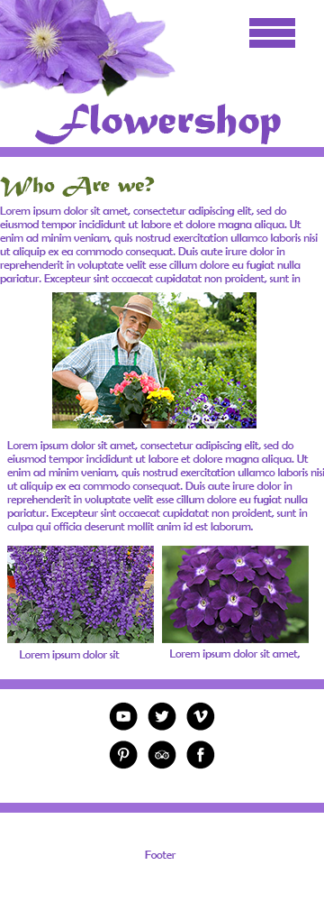

Rick's Desktop VS. Mobile.
practice (optionl) task.
final task.
Mine is simplicity with a peaceful, strong colour like purple. Light purple is a colour that is very vibrant, but also a calming colour that represents the lifeline of flowers. The layout doesn't overwhelm the viewers eyes, but also attracts the viewer, making them stay on the webpage longer.